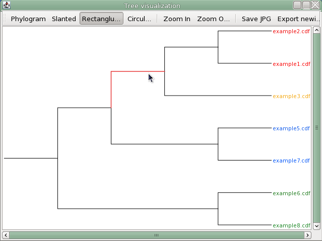

Clustering
Description
The goal of clustering is to group a set of observations into subsets (clusters) finding an intrinsic structure in them so that the members of one single cluster share more similarities than the members of distinct clusters. Clustering is the most important method of unsupervised learning, and a common technique for statistical data analysis used in many fields.
There is no absolute "best" criterion which would be independent of the final aim of the clustering. Consequently, it is the user which must supply this criterion, in such a way that the result of the clustering will suit their needs.
The result of the clustering can be visualized using PCA plot of Sammon's projection, and the data can be seen in a table where in the first column are the names of the samples or variables and in the second column the cluster id (a number) for each sample or variable. Visualization of the hierarchical clustering result is implemented based on TreeViewJ software ("Peterson, M.W. and M.E. Colosimo, TreeViewJ: an application for viewing and analysing phylogenetic trees. Source Code Biol Med, 2007. 2(1): p. 7.")

Method parameters
- Data files
- Raw data files correspondent to the samples selected to bi in the projection plot.
- Colouring style
- The dots corresponding to every sample can be colored depending on the sample's parameter state or on the file.
- Peak measuring approach
- It can take two values: height or area. The projections will be calculated using one of this two values.
- Peaks
- Peaks that will be taken into account to create the projection plot.
- Visualization
- The visualization of the result of non hierarchical clustering algorithms can be performed using PCA or Sammon's projection
- Type of data
- It can take two values: Samples or variables. The clustering will be applied to one of this types of data.
- Algorithm
- Algorithm that will be used to cluster the data.
- Link type
- This parameters is only enable when the hierarchical clustering has been chosen. The distances between clusters is determined by the chosen linkage.
- Distance fuction
- This parameters is only enable when the hierarchical clustering has been chosen. The distances between points is determined by the chosen distance function.
- Number of groups
- The number of clusters has to be defined by the user in advance for some clustering algorithms. This parameter is available only when K-means or Farthest First algorithm are chosen.